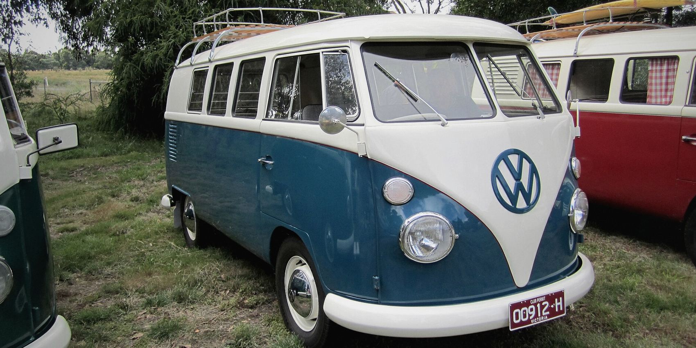
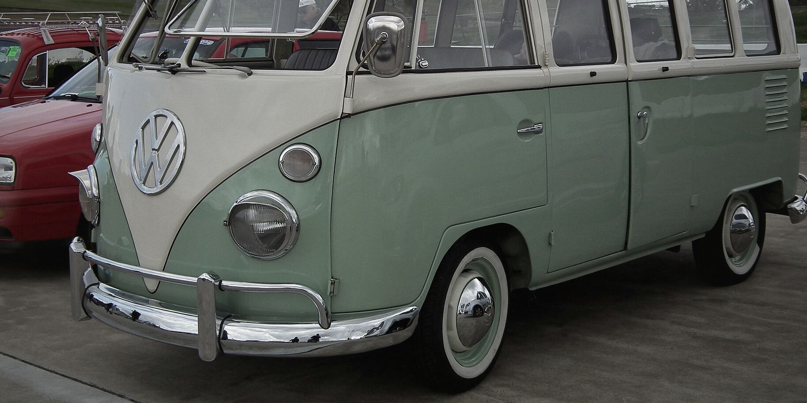
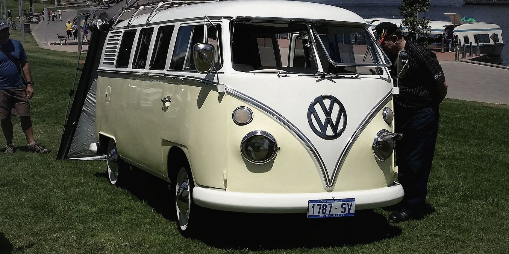
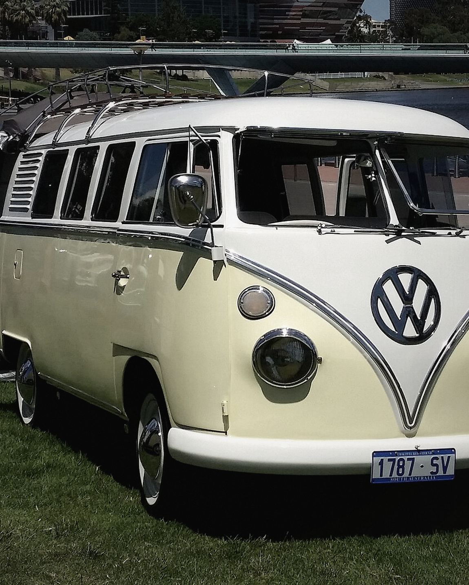
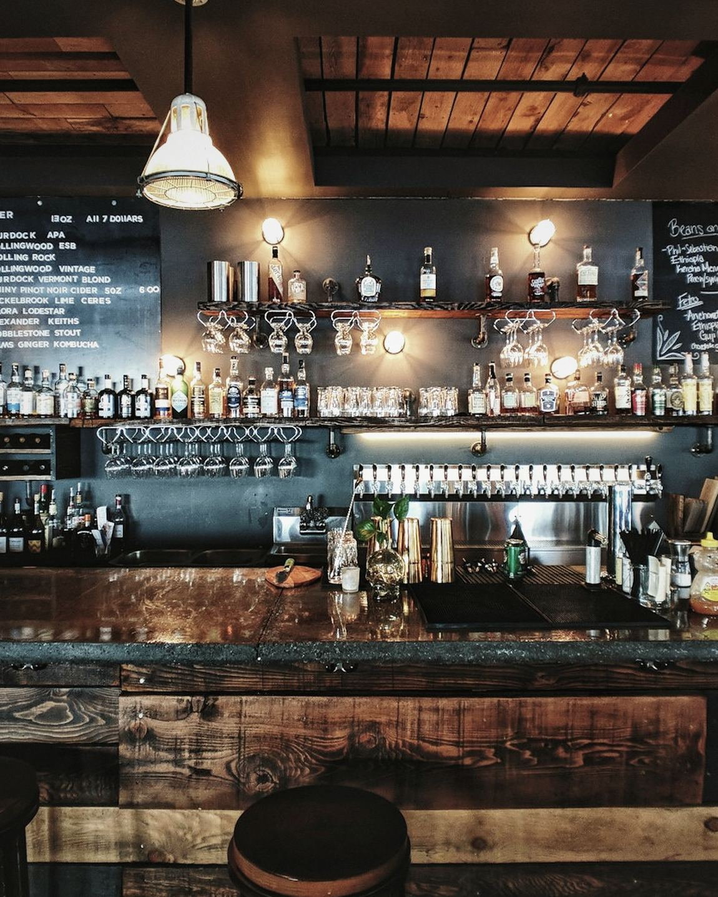
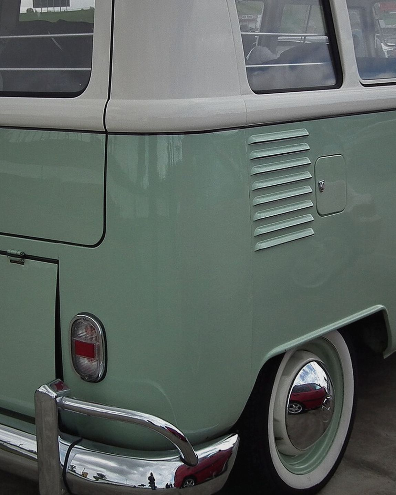
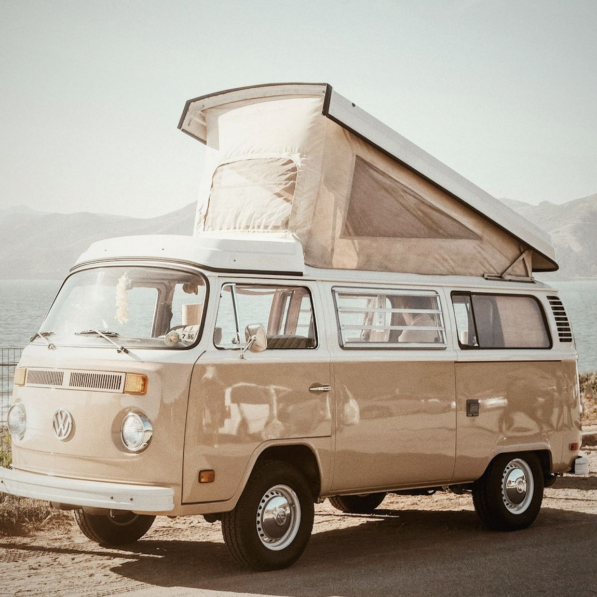
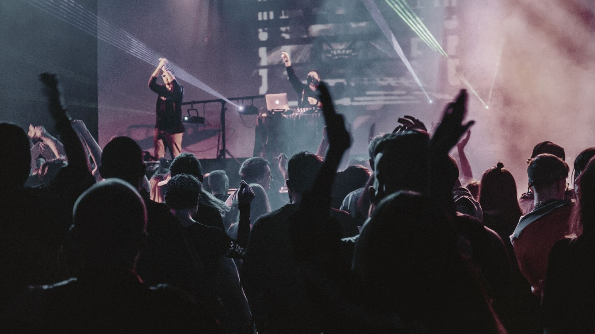

Nos véhicules évènementiels en location
Un véhicule,
pas un décor.
Le combi n'est pas posé là pour la photo. C'est un vrai comptoir : tireuse deux becs, bac à glace, plan de travail réfrigéré, évier. Il sert, il débite, il tient une soirée entière sans qu'on ait à penser à lui.
Et quand vous préférez l'imaginer autrement, on le vide. Il ne reste que le bois, les vitres et une prise de courant. Ce que vous mettez dedans vous regarde : une platine, un photographe, une boutique éphémère, trois cents fleurs.
Trois façons
de l'utiliser.
Le même châssis, trois aménagements. On monte la veille, on démonte le lendemain matin.



-
Le bar
Le flanc s'ouvre, le comptoir se déplie, deux personnes servent en même temps. C'est la configuration la plus demandée, et celle qui vide le moins vite une file d'attente.
Tireuse 2 becs120 services/heureBac à glace 40 LÉvier & eau claire -
Le traiteur
Plan réfrigéré, passe ouvert vers l'extérieur, rangement bas. Votre traiteur travaille dedans sans avoir à courir jusqu'à une cuisine à quarante mètres.
Froid positif 90 LPlan inox 1,4 mPasse latéral220 V / 16 A -
La coquille nue
Tout sort. Il reste le plancher bois, les vitres d'origine et une alimentation. C'est la version que prennent les scénographes, les DJ et les marques.
4,2 m²Hauteur 1,45 mDeux prises 220 VSans habillage
Ce qui va autour.
Assez de mobilier pour asseoir soixante personnes, et pas un meuble qui jure avec le combi. Livré, monté, repris.
- Tables de ferme, chêne8
- Bancs bois brut, 2 m16
- Tabourets de bar, noyer12
- Mange-debout, tôle noire10
- Guirlandes guinguette60 m
- Parasols toile écrue4
- Comptoirs d'appoint2
- Verrerie, service complet200
Et quelqu'un
derrière le comptoir.
Un barman, deux si vous êtes plus de cent. Ils arrivent avec leur carte — six cocktails, dont deux sans alcool qu'on n'a pas bâclés — ou travaillent la vôtre. Pour la musique, on a deux DJ qu'on connaît bien et qu'on vous présente sans commission.
En service.
Survolez une image.


Ils l'ont fait
venir.
« On avait peur que ça fasse gadget à côté de la robe. En fait c'est la seule chose que tout le monde a photographiée. »
« Cent quarante personnes, deux heures de service, jamais plus de trois au comptoir. Je ne sais pas comment ils font. »
« On l'a pris vide. On a mis la platine dedans et ouvert les portes arrière. Ça a fait la scène toute seule. »
Dites-nous où,
et quand.
Une réponse chiffrée sous 48 heures, ou un appel si c'est plus simple.